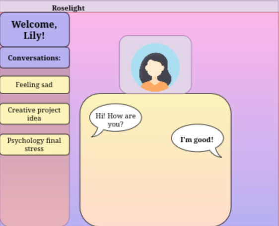
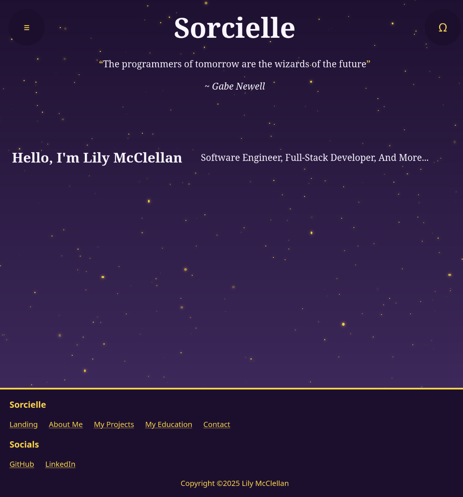
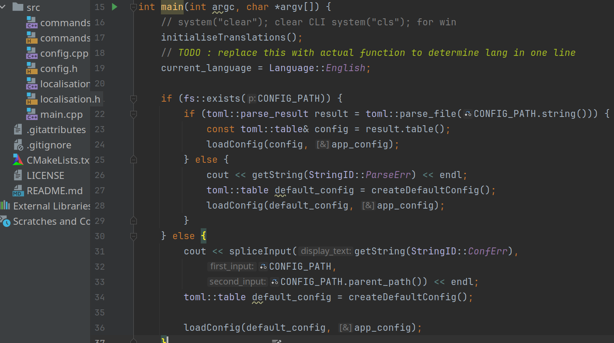

My Projects
Roselight

Roselight UI Sketch
Roselight is my big upcoming personal project. There are two major componenets to this project,
the software (Roselight), and the custom LLM (Aiko). Roselight's purpose is to be a lightweight
desktop solution to running LLM's on your own machine, and Aiko will be the demo LLM created to
showcase the softwares main features.
The branding initially will be towards mental health and
accessability of AI technology, but Roselight's prospective modular features will allow it to
interface with any LLM (built in Ollama support planned) and allow the user to have their own
'ChatGPT', 'Claude', or just general assistant on their local machine without worries over digital
privacy, expensive subscriptions, or rate limiting.
The only limitation is what your personal computer
can handle, which in our modern day is a surprisingly impressive catalogue.
This project will be
written in C++ using GTK4 (of which I have some experience already), with the LLM using a document database
and custom logic (Rust or Python) for running the LLM integrations (which will likely use HuggingFace with a few other
components)
sorcielle.dev

Sorcielle working landing page
Sorcielle will be my full personal website and personal portfolio (separated by a wildcard domain to avoid interference).
Though this current website is serving as my active portfolio, I have plans to migrate over after situating the full project.
The full website spans far more than just static front end webdesign. To discuss those plans, I need to separate the project
into its personal and professional parts:
Personal
My personal website will have basic website integration with a multitude of back-end concepts like a database for website accounts
(for use in a WebRTC client), file hosting service, and more !
professional
Additional to all of the fun web-app projects, I plan on having a few interesting professional ones. For starters, I will be hosting my
own email service (pending technical evaluation, highly prospective), a more advanced and dynamic portfolio using TypeScript, and a
more complete demonstration of the projects that I have completed or am completing.
Coffre (and more)

Code snippet of Coffre
I could demo nearly a hundred different CLI applications or scripts that I have run, but Coffre is different. Coffre is my first attempt
at branching out from mundane static applications to an actually practical full CLI application. It's a simple encryption app with the
ability to encrypt/decrypt/hash files.
This was my first full attempt at something that can be deployed as a full CLI app on
my computer and fulfil a full function that I find the need of in my technical endeavours. This project was the start of a series of 'script'
projects that fulfil a multitude of basic needs (an efficient CLI calculator, this encryption CLA, and more to come).
Though simple in
nature, this application was my first step in an ever increasing path towards my more ambitious goals and projects, and marks the start of my
full development career.